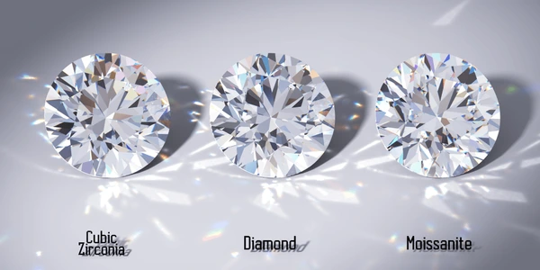
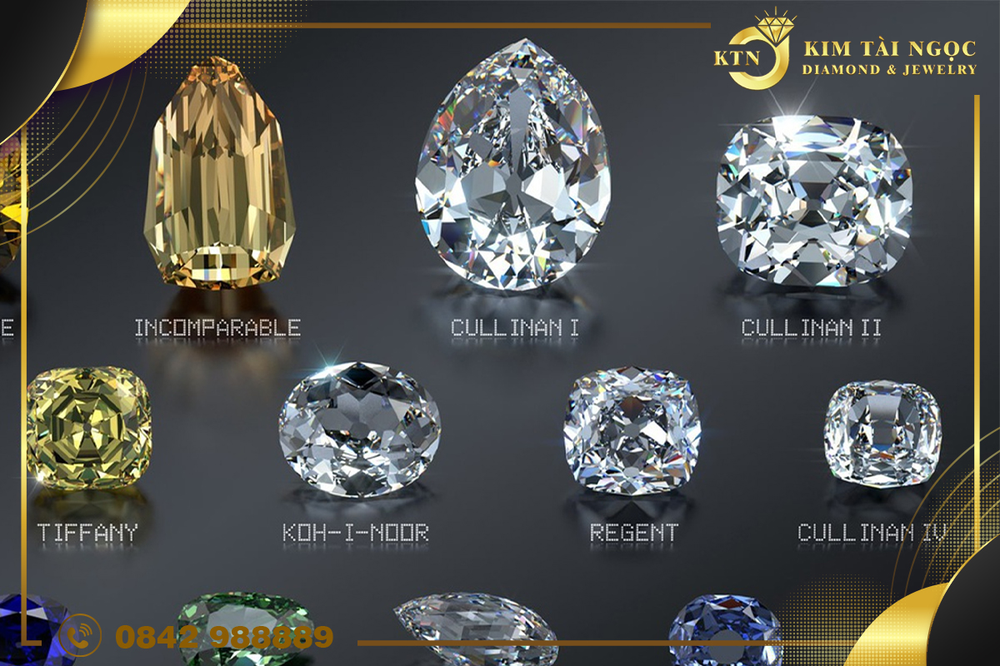
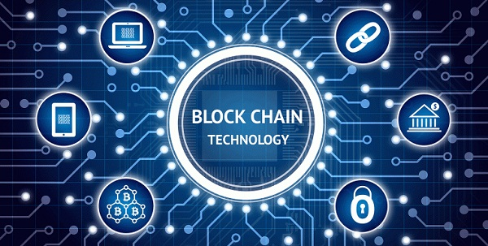

CẬP NHẬT XU HƯỚNG KIM CƯƠNG MỚI NHẤT 2025
Giới Thiệu Xu Hướng Kim Cương 2025
Năm 2025, ngành công nghiệp kim cương tiếp tục chứng kiến những sự thay đổi và phát triển mạnh mẽ, phản ánh xu hướng tiêu dùng hiện đại và công nghệ tiên tiến. Dưới đây là những xu hướng nổi bật của kim cương trong năm 2025
1. Sự Lên Ngôi Của Kim Cương Nhân Tạo
Kim cương nhân tạo ngày càng được ưa chuộng nhờ vào giá thành hợp lý, chất lượng không thua kém kim cương tự nhiên và tính bền vững với môi trường. Với sự cải tiến trong công nghệ chế tác, kim cương nhân tạo có thể được sản xuất với độ tinh khiết cao và nhiều màu sắc đa dạng.
Kim Cương Nhân Tạo
2. Xu Hướng Cắt Kim Cương Độc Đáo
Những kiểu cắt truyền thống như tròn, công chúa và oval vẫn giữ vững vị thế, nhưng các kiểu cắt sáng tạo như hình lục giác, giọt nước và hình tam giác đang trở nên phổ biến hơn. Xu hướng này đáp ứng nhu cầu cá nhân hóa của người tiêu dùng, giúp họ thể hiện phong cách riêng biệt.
3. Kim Cương Màu Sắc Lên Ngôi
Bên cạnh kim cương trắng truyền thống, kim cương màu sắc như xanh lá, hồng, vàng và xanh dương đang ngày càng được săn đón. Những viên kim cương màu không chỉ mang đến vẻ đẹp độc đáo mà còn thể hiện đẳng cấp và sự sang trọng của người sở hữu.
Các Loại Kim Cương Nhiều Màu Sắc
4. Sự Ảnh Hưởng Của Công Nghệ Blockchain
Công nghệ blockchain được ứng dụng ngày càng rộng rãi trong ngành kim cương để đảm bảo tính minh bạch và nguồn gốc của sản phẩm. Nhờ đó, người mua có thể dễ dàng xác thực thông tin về kim cương, bao gồm nguồn gốc, quá trình khai thác và chứng nhận chất lượng.
Công nghệ BlockChain
5. Kim Cương Mang Ý Nghĩa Cá Nhân
Ngày càng nhiều người tìm kiếm những viên kim cương có ý nghĩa đặc biệt, thể hiện câu chuyện cá nhân hoặc gắn liền với những sự kiện quan trọng trong cuộc đời. Dịch vụ khắc laser hoặc kim cương đặt riêng theo yêu cầu cũng trở nên phổ biến hơn.
Kết Luận
Xu hướng kim cương năm 2025 cho thấy sự kết hợp giữa công nghệ, tính cá nhân hóa và xu hướng bền vững. Người tiêu dùng ngày càng quan tâm đến nguồn gốc, kiểu dáng và ý nghĩa của viên kim cương họ lựa chọn. Đây là một thời điểm thú vị cho cả ngành công nghiệp kim cương và những người yêu thích trang sức sang trọng.